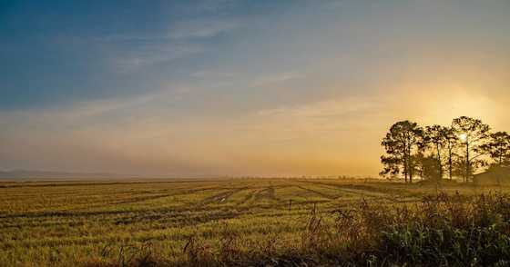
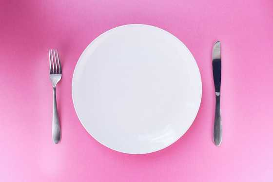
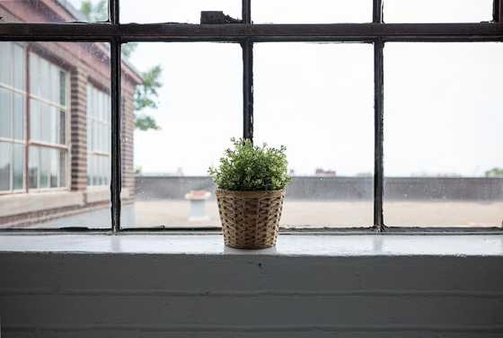

富山県南砺市梅原・カフェ
畑のめぐみで、
こころとからだを整えるごはん。
無農薬野菜と平飼い卵、無添加の手作り調味料でつくるごはんのお店です。
お店のこと
畑の野菜と卵を、そのままごはんに。
Instagramの紹介文によると、のざわふぁーむは「こころとからだを整えるごはん」を掲げるオーガニックカフェです。手作りの無農薬野菜、のざわふぁーむの平飼い卵、無添加の手作り調味料を使うとしています。ランチ営業、子連れでの利用、テイクアウト、お料理教室の開催についても紹介されています。
店名の由来やお店が始まったいきさつは確認できていません。「ふぁーむ」の名から畑や農とのつながりを思い描いたのは、制作側のイメージです。


ごはん
体にやさしいランチを、お店でも持ち帰りでも。
ランチ
内容・価格は準備中
内容・価格は準備中
テイクアウト
内容・価格は準備中
内容・価格は準備中
お料理教室
開催日・内容は準備中
開催日・内容は準備中
営業時間・定休日・電話番号・ご予約:準備中



口コミ
こんな声が届くお店に イメージ例
以下は制作側が作成したイメージ例で、実在の声ではありません。
イメージ例
野菜の味がしっかりしていて、食べ終わったあと体が軽くなりました。
イメージ例
子どもと一緒でも気兼ねなく過ごせて、ほっとできる時間でした。
イメージ例
卵のやさしい味が印象的。また季節のごはんを食べに行きたいです。



掲載写真はフリー素材のイメージで、店舗の実際の様子・提供メニューではありません。実際の写真はお店ご提供のものに差し替えます。
写真クレジット
- images/tomato.jpg「Tomatoes for sale」 作者: Jeffery Martin / ライセンス: CC0 1.0 / 撮影地: アメリカ / 出典: Wikimedia Commons(縮小加工)
- images/field.jpg「Morning has Arrived - Flickr - Corey Leopold」 作者: Corey Leopold / ライセンス: CC BY 2.0 / 撮影地: アメリカ・テキサス州 / 出典: Wikimedia Commons(縮小加工)
- images/wheat.jpg「Sunrise in a wheat field near Cambridge, UK」 作者: sagesolar / ライセンス: CC BY 2.0 / 撮影地: イギリス・ケンブリッジ近郊 / 出典: Wikimedia Commons(縮小加工)
- images/meadow.jpg「Wildflower Meadow - geograph.org.uk - 81827」 作者: Nigel Homer / ライセンス: CC BY-SA 2.0 / 撮影地: イギリス / 出典: Wikimedia Commons(縮小加工)
- images/grass.jpg「Windswept meadow (Unsplash)」 作者: Paul Jarvis / ライセンス: CC0 1.0 / 撮影地: 撮影地不明 / 出典: Wikimedia Commons(縮小加工)
- images/path.jpg「Garden path Harlow Museum & Walled Gardens, Essex 01」 作者: Acabashi / ライセンス: CC BY-SA 4.0 / 撮影地: イギリス・エセックス / 出典: Wikimedia Commons(縮小加工)
- images/ears.jpg「Ears of wheat at dusk (Unsplash)」 作者: Cezanne Ali / ライセンス: CC0 1.0 / 撮影地: インド / 出典: Wikimedia Commons(縮小加工)
- images/plate.jpg「Empty table setting plate fork knife (42585288225)」 作者: Stock Catalog / ライセンス: CC BY 2.0 / 撮影地: 撮影地不明 / 出典: Wikimedia Commons(縮小加工)
- images/tea.jpg「Herbal Tea 01」 作者: PagesAndPathsPH / ライセンス: CC0 1.0 / 撮影地: 撮影地不明 / 出典: Wikimedia Commons(縮小加工)
- images/steam.jpg「Coffee steaming in a mug」 作者: PedanticNarrativeController / ライセンス: CC0 1.0 / 撮影地: アメリカ・ミネソタ州付近 / 出典: Wikimedia Commons(縮小加工)
- images/cup.jpg「Warm coffee cup resting on window sill during a quiet morning with soft natural light」 作者: Shixart1985 / ライセンス: CC BY 2.0 / 撮影地: 撮影地不明 / 出典: Wikimedia Commons(縮小加工)
- images/pot.jpg「Wicker plant and big window (Unsplash)」 作者: Amanda Mocci / ライセンス: CC0 1.0 / 撮影地: 撮影地不明 / 出典: Wikimedia Commons(縮小加工)
- images/rolls.jpg「Basket of rolls」 作者: Daniel Sone(米国NIH/国立がん研究所) / ライセンス: パブリックドメイン / 撮影地: 米国機関由来 / 出典: Wikimedia Commons(縮小加工)
- images/basket.jpg「French bread」 作者: Marianne Casamance / ライセンス: CC BY-SA 4.0 / 撮影地: フランス / 出典: Wikimedia Commons(縮小加工)